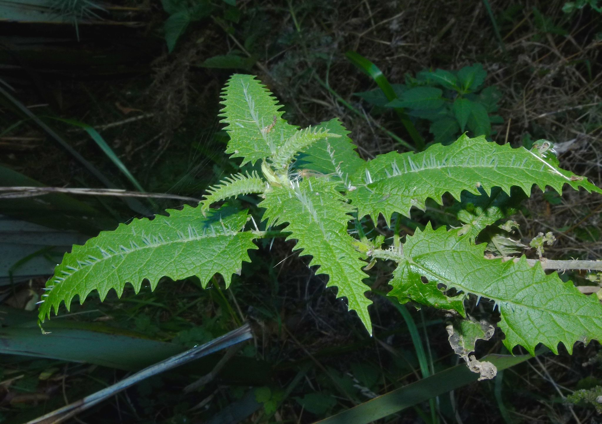
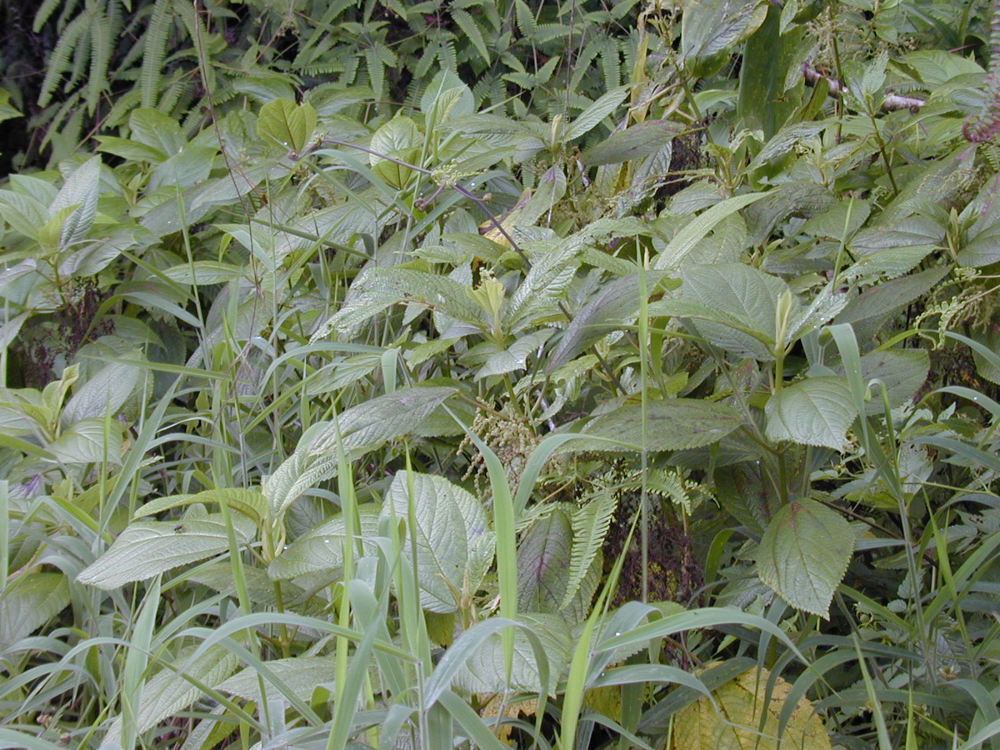
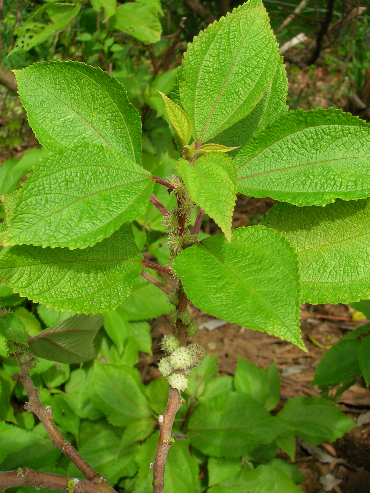
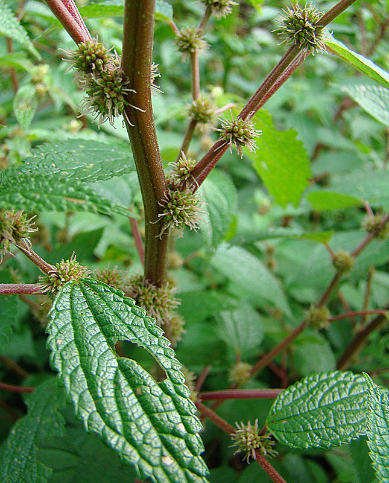
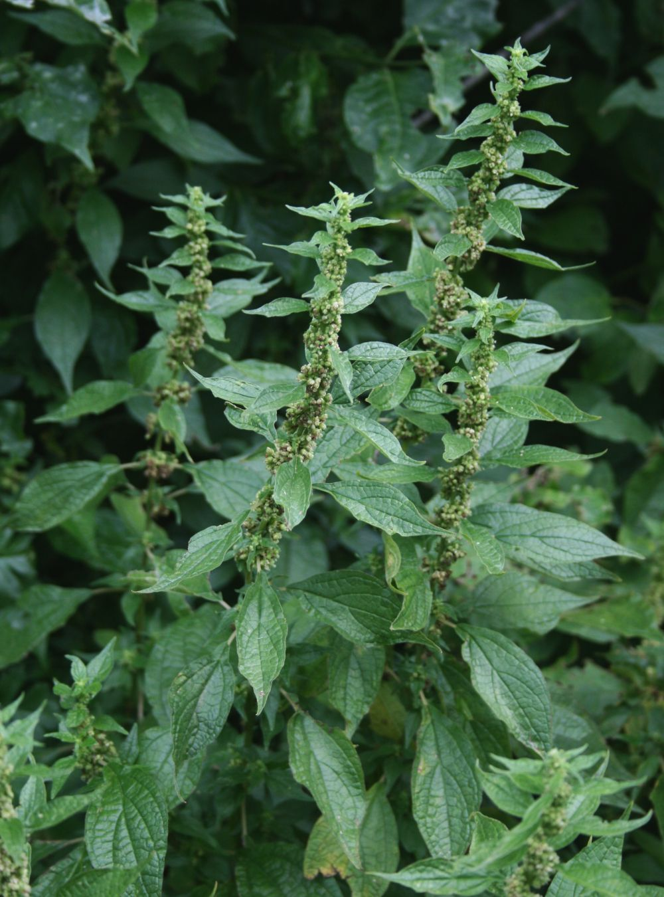

Urticaceae
nettle family
|  Urtica dioica (tree nettle) from Wikimedia Commons by Steve Kerr, CC BY 4.0 |
 Boehmeria grandis ('akolea) from Wikimedia Commons by Forest & Kim Starr, CC BY 3.0 |
|  Pipturus albidus (māmaki) from Wikimedia Commons by Forest & Kim Starr, CC BY 3.0 |
 Phenax rugosus from Wikimedia Commons by Dick Culbert, CC BY 2.0 |
{kind=link}
{kind=link}
{kind=link}
{kind=link}
botanical characteristics
Botany in a Day, p. 90 | "Urticaceae", Wikipedia
- growth form
- mostly herbaceous plants but can be shrubs, lianas, or rarely, trees
- stems/leaves
- simple, usually opposite leaves
- occasionally squarish, usually hairy stems
- hairs on the stems and underneath the leaves function as hypodermic needles, resulting in an irritating/painful sting on contact
- flowers
- green or brownish flowers are mostly unisexual
- 4-5 sepals, 0 petals
- reproductive structures
- 4-5 stamens
- ovary is positioned superior and has only one carpel
- matures as an achene (dry seed)
distribution
"Urticaceae", Wikipedia
- 2625 species grouped into 53 genera
- can be found worldwide, apart from the polar regions
ecological roles
"Distribution, Ecology, Chemistry and Toxicology of Plant Stinging Hairs", MDPI
- the ecological role of plant stinging hairs seems to be predominantly in herbivore defense and primarily aimed at mammalian herbivores, which makes them successful pasture weeds
- there is clear evidence that mechanical damage, such as inflicted by browsing, increases stinging hair density on new growth and that populations under higher herbivore pressure evolve higher stinging hair densities, underscoring the direct relationship between stinging hairs and mammalian browsing
- at the same time, a very wide range of mammals—including rodents, ursids, cervids, bovids, and primates—consume stinging plants often to a considerable degree, demonstrating the limits of this defensive strategy
- conversely, stinging hairs appear to play a negligible role in the defense against invertebrate herbivores
- Urtica dioica is highly palatable to slugs, and an entire subcosmopolitan group of butterflies (Nymphalini) comprises numerous taxa more or less specialized on Urtica as larval food plant
- Dendrocnide, arguably the most vicious stinging plant, has its own specialized herbivore in a species of beetle (Diphycephala pygmaea, Scarabaeidae)
common pharmacological constituents
"Angiosperm families - Urticaceae Juss.", DELTA
- not cyanogenic; alkaloids present, or absent; anthraquinones detected (Boehmeria); polyacetate derived; arbutin absent; iridoids not detected; proanthocyanidins present, or absent; when present, cyanidin; flavonols present, or absent; when present, kaempferol and quercetin, or quercetin; ellagic acid absent (8 species, 5 genera); aluminium accumulation not found; sieve-tube plastids S-type (without starch)
patterns in medicinal actions
- protects its nutritional value with its stinging hairs
- medicinal action is one of filtration: diuretic, alterative, replenishing minerals
- growing in disturbed areas, coming back from being grazed/trampled, resilience, affinity with insects: adaptation
- that which does not kill you makes you stronger
traditional/cultural uses
Botany in a Day, p. 90
- most plants are edible as potherbs (cooking deactivates the stinging hairs)
- stalks have strong fibers for making cordage
warnings
Botany in a Day, p. 90 | "Urticaceae", Wikipedia
- many (not all) members have stinging hairs, which can cause pain and irritation lasting from one hour to several days or, in the case of Dendrocnide moroides, years
extra information
prominent genera
- Boehmeria (false nettles)
- Dendrocnide (stinging trees)
- Hesperocnide (western nettles)
- Laportea (wood nettles)
- Parietaria (pellitories)
- Pilea (clearweeds)
- Urtica (stinging nettles)
plant highlights
see list of materia medica entries here
Parietaria officinalis
|  from Wikimedia Commons by Franz Xaver - Trabajo propio, CC BY-SA 3.0 |
common names: pellitory, pellitory-of-the-wall en español: cañarroya, parietaria |
{kind=link}
description
"Parietaria officinalis", Wikipedia
- perennial herbaceous plant with red stems and many branches covered in rough hairs red stems
- dark green leaves are alternate, petiolate, ovate, and cut at the ends, with hairs only on the underside
- flowers are greenish or whitish and emerge in the axils of the stalkless leaves, grouped in groups of five to form glomeruli
- fruit is a shiny, black achene
distribution
"Parietaria officinalis", Wikipedia
- found throughout central and southern Europe, western Asia, and northern Africa
- a common plant that grows on the walls of abandoned buildings, old walls, and ruins
medicinal/magical uses
The New Age Herbalist, p. 121
- used as a soothing diuretic to treat retention of urine, cystitis, nephritis, inflammation of the prostate, and urinary stones
- as a poultice applied to the kidney area or over the bladder
preparation methods
- infusion
- poultice/compress
warnings
"Parietaria officinalis", Wikipedia
- has stinging hairs
sources
"Angiosperm families - Urticaceae Juss." on DELTA - DEscription Language for TAxonomy. Retrieved 3 September 2025.
Easely, Thomas and Steven Horne. The Modern Herbal Dispensatory (2016)
Elpel, Thomas J. Botany in a Day: The Patterns Method of Plant Identification (2021)
Ensikat, Hans-Jürgen, Hannah Wessely, Marianne Engeser, and Maximilian Weigend. "Distribution, Ecology, Chemistry and Toxicology of Plant Stinging Hairs" (2021) on MDPI. Retrieved 3 September 2025.
Goldberg Blackthorn, Samantha. Ace of Cups Herbal Medicine and Botanical Magic Herbal School (2024)
Mabey, Richard et al. The New Age Herbalist (1988)
"Parietaria officinalis" on Wikipedia. Retrieved 3 September 2025.
"Urticaceae" on Wikipedia. Retrieved 3 September 2025.